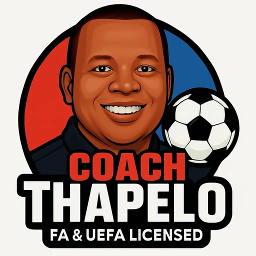
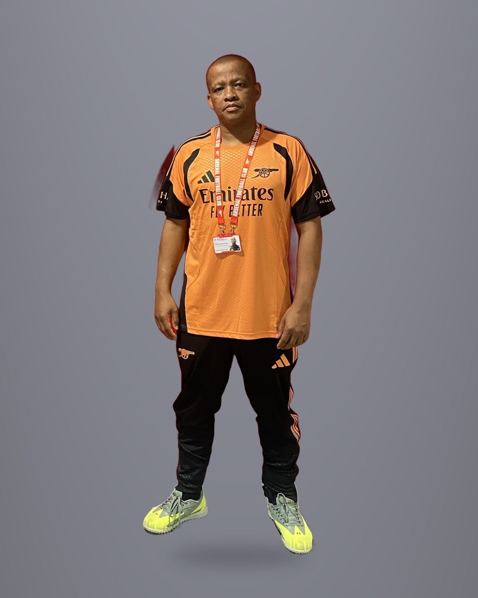
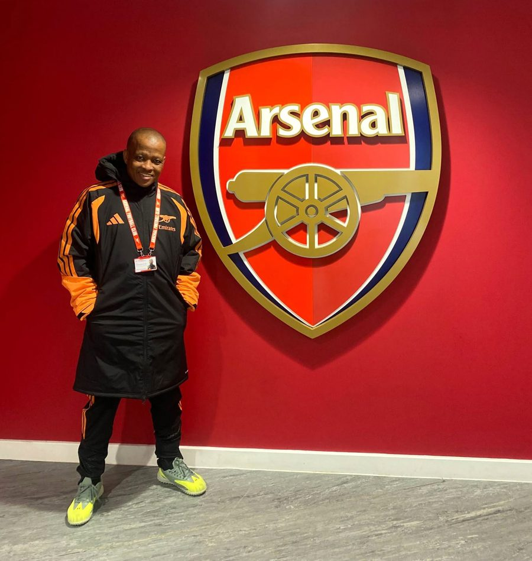

Community football coach Luton and North London
Every player.Every place.Progress.
I use football to build confidence, belonging and skill in schools and communities. Every session planned, delivered with purpose and reviewed honestly.

Coach ThapeloExplore
A community football coach who uses the game to develop young people and communities. Pick a page.
The Arsenal Community Coach Development Programme 2026/27, and my school placement.
→ 02 · Session by sessionMy programme log, what I'm learning and what's coming up.
→ 03 · Who I amApproach, philosophy, who I work with, and my story from the press box to the pitch.
→ 04 · On the recordUEFA C, Enhanced DBS, safeguarding and the full qualification register.
→ 05 · How I coachPlan it. Play it. Progress. Build a free session plan with AI.
→ 06 · Also availableExtra focus for individual players and small groups.
→About
Approach, philosophy, who I work with and where I come from.
The coaching approach
I am a football coach first. I use the game to develop young people and communities: confidence, belonging and skill, planned around the people in front of me.
Four years with Luton Town FC Foundation across schools, holiday provision, girls' and women's sessions and Premier League Primary Stars taught me to make the game accessible, challenging and enjoyable. Nine years in football media adds planning, video review and communication, but the work always starts on the pitch, in the playground or the community centre.
My current programme →I go where people are: primary schools, estates, parks and community centres, working alongside teachers and local partners.
Girls-only, mixed ability, beginners and accessible sessions. I adapt the activity, never exclude the person.
Football as a tool for confidence, teamwork and decision-making, with pathways from a lunchtime club to a team.
Planning, match review and clear communication that helps the wider club or programme.
Extra focus for individual players, with a written development plan.
Coaching philosophy
I use the game to build confidence, teamwork, communication, decision-making and wellbeing. Technique matters. So does the young person.
Girls and women, disabled players, beginners, people new to the country. I adapt the activity, never exclude the person.
I go where people are: schools, estates, parks and community centres. I work with local partners and respect each setting's routines.
Every session planned, delivered with purpose and reviewed honestly. Attendance, feedback and pupil questionnaires show the impact.
From a lunchtime club to a team. From a drop-in to a qualification. From player to volunteer to coach.
Girls-only sessions build belonging and confidence first, skill second. Then they stay.
Who it's for
From the press box to the pitch
Born in Johannesburg, of BaTaung heritage, I spent nine years reporting on South African professional football in the PSL and founded FullCircle Sport Online. Where it helps the players and the club, I use that experience to support the coaching.
Storytelling serves the community too: I help projects capture and share what they achieve.
Match reviewFilm and revisit key moments to support specific coaching conversations.
Player feedbackTurn observations into simple, practical points that players can use.
Club communicationClear session or match information for staff, players and parents.
School visitsFootball and South African heritage sessions that link sport to the classroom.
Community
Volunteer coach on the Arsenal Community Coach Development Programme: coach education, placements and what I am learning.
Right now Arsenal Community Coach Development Programme 2026/27
I'm a volunteer coach on the Arsenal Community Coach Development Programme 2026/27. The school placements, coach education and workshops below all happen through the programme.


The programme in full
How I got hereSelected through an assessment day on 23 June 2026, then onboarded in September, including an Enhanced DBS check.
Where and how longBased at The Arsenal Hub, N7. Year-long, September 2026 to summer 2027. I take part as a volunteer coach.
Coach educationEvery Tuesday, Thursday and Friday morning at the Hub, starting with an induction week on 1 September.
Community placementsPractical placements in the community, supporting the lead staff. The strand rotates each half-term.
Assignments and reflectionA Session Reflection Form after sessions, plus set assignments, like designing a small-sided game in pairs and delivering it to the group at Market Road, N7.
WorkshopsStepping Over the Sidelines, identifying support needs and behaviours, and inclusive formats including visually impaired and blind football.
My half-term 1 placement is the Primary Schools strand (Premier League Primary Stars). I support the lead staff in primary schools across Islington and Camden: girls' lunchtime clubs, football-focused learning and PE, and in-class support alongside the class teacher.
Every Tuesday since 22 September, I support the women and girls lead coach at a primary school: a girls' lunchtime football club, then two Year 6 PE lessons. Week one was observing and getting to know the pupils. The next step is planning and leading part of the lunchtime club, starting with the arrival activity.
Half-term 1 · Primary Schools strand
The programme rotates my placement each half-term, across strands such as schools, social inclusion, health and accessibility, women and girls, and grassroots football. Coach education carries on every Tuesday, Thursday and Friday morning.
September 2026 to summer 2027
Coach education so far
Topics covered at the Hub, on the pitch and in schools in the first month. The full session log is in my programme journal.
Induction week and the Session Reflection Form
Small-sided games designed with outcomes in mind, delivered to the group and saved in the programme's Coaching Manual
Session structure and an introduction to delivering a coaching session
Premier League Primary Stars briefing: teacher support, football-focused learning and pupil questionnaires
Identifying support needs and behaviours, and planning for differentiation, with Angel Shed
A primary school event: pitch activities, a stadium tour and workshops, with great feedback from pupils and staff
Next on the programme: carousel and whole-part-whole session structures, planning my own session, a pre-academy visit and a Black History Month primary school event.
What I'm learning
Written up as I go, session by session.
Supporting the class teacher without taking over
Building girls' confidence through girls-only sessions
Using football to support learning and behaviour
Safeguarding in school settings
Programme evaluation with pupil questionnaires
Adapting one plan for mixed ages and abilities
How I show up
The standards I hold myself to on placement and beyond.
Support, don't take over. I observe first, then add value to the teacher or lead coach.
Safe and professional. Safeguarding first, clear boundaries, no unauthorised photos, concerns go to the lead.
A role model. Punctual, reliable and approachable, and I communicate early if I can't attend.
I take part as a volunteer on the programme. Arsenal does not employ me, and this site is my own.
Programme journal
My running record of the programme: sessions, placements, what we covered and what is coming up. A personal journal, not an Arsenal publication.
The programme
I was selected through an assessment day in June 2026. I'm a volunteer coach on the programme, based at The Arsenal Hub, N7, from September 2026 to summer 2027.
Coach education happens at the Hub every Tuesday, Thursday and Friday morning. The rest of the week is practical placements in the community, rotating each half-term.
This is my personal learning journal. It is not an Arsenal publication, and nothing on this page means the club endorses, employs or recommends me.
Tuesday, Thursday and Friday mornings: session structure, small-sided games, delivering a coaching session.
Supporting lead staff in real settings, starting with primary schools.
Inclusion, identifying support needs and behaviours, and stepping over the sidelines.
Designed and delivered work, with a Session Reflection Form after every session.
Half-term 1
Premier League Primary Stars, in primary schools across Islington and Camden. I support the lead staff. I don't lead the sessions.
Helping girls-only clubs where belonging and confidence come first, and skill follows.
Supporting lessons where football is the way into learning, behaviour and teamwork.
Working alongside the class teacher. Observe first, then add value, never take over.
No school, pupil or staff member is named on this page, and no photos of children are used.
Across the year
Session log
Compiled from the programme's weekly recaps and session notices. Times and venues are shown where they were confirmed.
What we covered
September built the foundations: how a session is structured, how a game is designed around an outcome, and how to read the needs of the people in front of you.
Each topic feeds straight into how I plan and deliver in schools and community settings.
Designing games with the outcome in mind, then delivering my own to the group.
A clear shape for every session, so the lesson is built in.
Turning a plan into a session that runs well on the day.
Full-day workshop that the delivery session built on.
Spotting what a young person needs so everyone gets a game.
Footgolf morning: what other games teach us about engagement.
Visually impaired and blind football added to the timetable.
Complement the teacher in class. Use the game for teamwork, communication and confidence on the pitch.
One plan, adapted so every child can take part and be challenged.
Next up: two session structures, then planning my own session.
In a classroom or a lead coach's session, I observe first, then add value.
Safeguarding first. Clear boundaries, no unauthorised photos, concerns go to the lead.
Coach education, honest reflection and the next qualification: FA Introduction to Coaching Football, then UEFA B.
Credentials
UEFA C licensed, FA registered, Enhanced DBS, and every certificate on the record.
Credentials & compliance
Certificates from The FA, England Football Learning and 1st4sport. Certificate numbers supplied on request. References completed through Arsenal CDP onboarding.
Held · Jan 2023
Current
Received September 2026
Completed · Sep 2026
Completed · Sep 2026
Compliance is current and maintained. Certificate numbers on request.
Credential register
Use the column headings to sort the register.
| UEFA C Diploma | The FA | Jan 2023 | Held |
| Enhanced DBS | Via Arsenal CDP onboarding | Sep 2026 | Received |
| FA coach registration | The FA | Ongoing | Current |
| FA Level 1 Award in Coaching Football | 1st4sport · Bedfordshire FA | Dec 2017 | Held |
| EE Playmaker | England Football | Apr 2025 | Completed |
| The FA Playmaker | England Football | Jan 2022 | Completed |
| Introduction to Talent Identification in Football | England Football Learning | Dec 2021 | Completed |
| FA Introduction to First Aid in Football | England Football Learning | Sep 2026 | Completed |
| Equality and Diversity | The FA | Aug 2021 | Completed |
| FA Safeguarding Children | The FA | Sep 2026 | Completed |
| FA Emergency First Aid | The FA | Jun 2017 | Superseded |
| Football Digital Marketing and Social Media | Sports Business Institute Barcelona | May 2016 | Completed |
Coaching record
Experience across community football, education and player development environments.
Volunteer coach, north London. Currently supporting primary schools delivery.
Selected via assessment day, June 2026.
Four years across community coaching, schools and holiday provision.
Bedfordshire and Luton community programmes.
Premier League Primary Stars delivery
FA RESPECT programme coaching
Women's football centre coaching
School-based coaching, curriculum PE and after-school clubs
Method
The session architecture I use in every setting, and a free AI session lab built on it.
The session architecture
Every session is written before delivery and reviewed afterwards. Plans go to the management team in advance, never improvised in the car park.
Sessions create repetition, decision-making and room for players to show what they understand. The paperwork supports the football, not the other way around.
The same plan adapts to a school hall, an estate pitch or an accessible session. And every review looks at impact, not just performance.
Ball each from the first minute
Topic repetition under light pressure
Game-realistic picture
Where the topic pays off
Apply it without interference
Player questions and message home
1-to-1
Private and small-group coaching that complements team, school and community football.
Also available 1-to-1 and small groups
Extra focus that complements team, school and community football.
Each session starts with what the player needs and ends with something to practise before the next one.
Coach and one player. Built on an opening assessment, with a homework drill every time.
Two to four players of a similar age and level. More game-like practice.
A run of weekly sessions with a written plan and a progress review with parents.
The player's age, club level and what they want to work on.
Strengths first, then the two or three things that will make the biggest difference.
Goals, session focus and what to practise alone, in writing.
Weekly sessions, with progress shared with the player and parents.
Venue, times and rates confirmed when you get in touch. A parent or carer is present for under-18s.
Availability & fit
I work with schools, community programmes and charities, clubs and families. For clubs, I can support an existing management team as an assistant coach, age-group lead or development squad coach, with U13 to U16 a particular focus. 1-to-1 and small-group coaching is also available.
Based in Luton and open to conversations across Bedfordshire, Hertfordshire and north London.